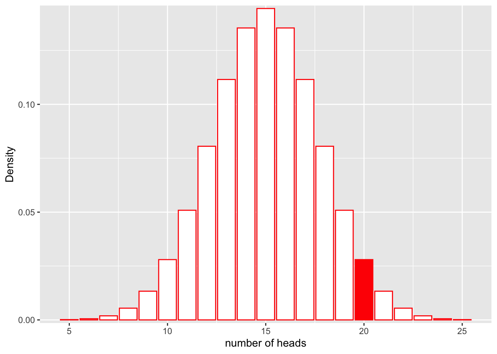

Naive Bayes Classifier
Anthony Hung
2019-08-06
Last updated: 2019-08-07
Checks: 6 0
Knit directory: MSTPsummerstatistics/
This reproducible R Markdown analysis was created with workflowr (version 1.3.0). The Checks tab describes the reproducibility checks that were applied when the results were created. The Past versions tab lists the development history.
Great! Since the R Markdown file has been committed to the Git repository, you know the exact version of the code that produced these results.
Great job! The global environment was empty. Objects defined in the global environment can affect the analysis in your R Markdown file in unknown ways. For reproduciblity it’s best to always run the code in an empty environment.
The command set.seed(20180927) was run prior to running the code in the R Markdown file. Setting a seed ensures that any results that rely on randomness, e.g. subsampling or permutations, are reproducible.
Great job! Recording the operating system, R version, and package versions is critical for reproducibility.
Nice! There were no cached chunks for this analysis, so you can be confident that you successfully produced the results during this run.
Great! You are using Git for version control. Tracking code development and connecting the code version to the results is critical for reproducibility. The version displayed above was the version of the Git repository at the time these results were generated.
Note that you need to be careful to ensure that all relevant files for the analysis have been committed to Git prior to generating the results (you can use wflow_publish or wflow_git_commit). workflowr only checks the R Markdown file, but you know if there are other scripts or data files that it depends on. Below is the status of the Git repository when the results were generated:
Ignored files:
Ignored: .DS_Store
Ignored: .RData
Ignored: .Rhistory
Ignored: .Rproj.user/
Ignored: analysis/.RData
Ignored: analysis/.Rhistory
Note that any generated files, e.g. HTML, png, CSS, etc., are not included in this status report because it is ok for generated content to have uncommitted changes.
These are the previous versions of the R Markdown and HTML files. If you’ve configured a remote Git repository (see ?wflow_git_remote), click on the hyperlinks in the table below to view them.
| File | Version | Author | Date | Message |
|---|---|---|---|---|
| Rmd | 7c27654 | Anthony Hung | 2019-08-07 | add NaiveBayes |
| html | 7c27654 | Anthony Hung | 2019-08-07 | add NaiveBayes |
Introduction
The Naive Bayes classifiers are a class of supervised machine learning algorithms that use Bayes rule to solve classification problems. Today we will introduce the concept of classification and implement a Naive Bayes classifier to build a classifier to identify poisonous mushrooms.
What is classification?
Classification is essentially the act of arranging items into predetermined categories according to shared characteristics amongst the items in the same category. An example is classifying a banana and apple as fruits and lettuce and spinach as vegetables. In machine learning, classification is typically an example of supervised learning, in which an algorithm learns from a user-supplied gold standard example of data and assigned category labels in order to determine patterns and shared characteristics that define each category. For example, consider this table of data that contains information about individual mushroom samples.
Motivating example: Is this Mushroom poisonous or not?
mush_data <- read.csv("data/mushrooms.csv")
mush_data[1:6,1:6] class cap.shape cap.surface cap.color bruises odor
1 p x s n t p
2 e x s y t a
3 e b s w t l
4 p x y w t p
5 e x s g f n
6 e x y y t aWe can break down the above table into two different elements. The first, containing all the columns except for the first one, is also known as the “feature matrix”. This matrix contains descriptions of each of the features that describe each of the individual mushrooms (i.e. mushroom 1 has a cap shape that can be described as conveX, a cap surface that is Smooth, a cap color of browN, has bruises, and a Pungent odor). The second element is the first column, also known as the “response vector”. The response vector contains the class of each of the mushrooms (the response variable in our case).
Notice that the response variable is a categorical variable that can take on one of two values: {e=edible, p=poisonous}. In classification problems, the y variable is always categorical. The analogous situation for when you have a numerical response variable is regression, which will be covered in a later lecture.
Using this labeled dataset, we can teach a classification algorithm how to predict if a new mushroom is poisonous or not, given we have information about the other features of that mushroom. In order to do this, the algorithm must search for patterns amongst the other features that are shared between poisonous mushrooms and distinguish these mushrooms from edible ones. One way to do this is through using a Naive bayes classifier.
As a side note, a third task that is often performed with machine learning is clustering, in which clusters are learned from the input data themselves rather than being specified by the user. This is a case of unsupervised learning, meaning the algorithm is not supplied with gold standard examples of what each cluster looks like but rather defines them on its own.
Review of Bayes rule
Before we jump into the applied example, we must first review the components of Bayes rule. Bayes rule is a result that comes from probability and describes the relationship between conditional probabilities.
Let us define A and B as two separate types of events. P(A|B), or “the probability of A given B” denotes the conditional probability of A occurring if we know that B has occurred. Likewise, P(B|A) denotes “the probability of B given A”. Bayes theorem relates P(A|B) and P(B|A) in a deceptively simple equation.
Derivation of Bayes rule
https://oracleaide.files.wordpress.com/2012/12/ovals_pink_and_blue1.png
{kind=link}
From our definition of conditional probability, we know that P(A|B) can be defined as the probability that A occurs given that B has occured. This can be written mathematically as:
\[P(A|B) = \frac{P(A \cap B )}{P(B)}\]
Here, \(\cap\) denotes the intersection between A and B (i.e. “A AND B occur together”). To calculate the probability of A conditional on B, we first need to find the probability that B has occured. Then, we need to figure out out of the situations where B has occured, how often does A also occur?
In a similar way, we can write P(B|A) mathematically:
\[P(B|A) = \frac{P(B \cap A )}{P(A)}\]
Since \(P(B \cap A )=P(A \cap B)\) (does this make sense?), we can combine the two equations:
\[P(A|B)P(B) = P(B \cap A ) = P(B|A)P(A)\]
If we divide both sides by P(B):
\[P(A|B) = \frac{P(B|A )P(A)}{P(B)}\]
This is Bayes theorem! Notice that using this equation, we can connect the two conditional probabilities. Oftentimes, knowing this relationship is extremely useful because we will know P(B|A) but want to compute P(A|B). Let’s explore an example.
Applying Bayes theorem: Example of screening test
Let us assume that a patient named John goes to a see a doctor to undergo a screening test for an infectious disease. The test that is performed has been previously researched, and it is known to have a 99% reliability when administered to patients like John. In other words, 99% of sick people test positive in the test and 99% of healthy people test negative. The doctor has prior knowledge that 1% of people in general will have the disease in question. If the patient tests positive, what are the chances that he is sick?
Components of Bayes rule
\[P(A|B) = \frac{P(B|A )P(A)}{P(B)}\]
If we define B to be our observed data (i.e. features of a mushroom), then Bayes theorem becomes:
\[P(A|Data) = \frac{P(Data|A )P(A)}{P(Data)}\]
Notice the \(P(Data|A)\) term is something we’ve talked about earlier, the likelihood. “The likelihood for a model is the probability of the data under the model.” With that in mind, we can now attach names to each of the terms in the equation.
P(A|Data) is known as the a posteriori probability, or the probability of a model A given some observations.
P(Data|A) is known as the likelihood.
P(A) is known as the prior probability, or the probability of A before we have the observations.
P(Data) is the prior probability that the data themselves are true.
Let us say we have two possible models \(A_p\) and \(A_e\) that could have generated our data that we would like to pick between.
\[P(A_p|Data) = \frac{P(Data|A_p )P(A_p)}{P(Data)}\]
and
\[P(A_e|Data) = \frac{P(Data|A_e )P(A_e)}{P(Data)}\]
If we would like to compare the probability that a certain set of data (or features of a mushroom) came from model \(A_e\) with the probability that the data came from model \(A_p\), we can simply compare their a posteriori probabilities \(P(A_e|Data)\) and \(P(A_p|Data)\). Additionally, we can notice that both of these a posteriori probabilities contain the same denominators, which means that the denominator can be ignored when comparing between them to see which is larger. Therefore, we can compare \(P(Data|A_e)P(A_e)\) and \(P(Data|A_p)P(A_p)\) to determine the model that has the higher probability of generating the observed data. Being able to ignore the denominator when using Bayes rule to compare between two (or more) models is an extremely convenient trick and simplifies things mathematically a great deal.
A Naive Bayes Classifier uses data that is fed into it to estimate prior probabilities and likelihoods to be used in Bayes rule. The classifier then uses Bayes rule to compute the posterior probability that a new observation belongs to each possible defined class given its other features. It then assigns the observation to the class that has the largest posterior probability (“Maximum A Posteriori Probability”, or MAP).
Exercise: Naive Bayes classifier to classify mushrooms
The reason why this is called a “Naive” Bayes classifier is that this algorithm assumes that each feature in the feature matrix is independent of all others and equal to all others in weight. For example, in our mushroom example a Naive Bayes classifier assumes that the cap shape of a mushroom does not depend on the cap color. Also, each feature carries equal weight in determining which class a row belongs to: there are no features that are irrelevant and each features contributes equally to the classification. Even though these conditions are almost never completely true in practice, the classifier still works very well in situations where these assumptions are violated.
Let’s walk through conceptually what the Naive Bayes algorithm does, and then look at how R can help perform each step.
Training a Naive Bayes algorithm using training data
As mentioned previously, training of a Naive Bayes algorithm essentially boils down to using training data to estimate values for prior probabilities (\(P(A_p)\) and \(P(A_e)\)) and likelihoods (\(P(Data|A_p)\) and \(P(Data|A_e)\)) to be inputted into Bayes rule.
1. Estimating Prior probabilities from training data
Question: What would be a good way to come up with a prior probability for a mushroom being poisonous if you have access to a labeled training dataset? Recall that a prior probability is the probability of a certain model before you have access to any data.
Pretty straightforward.
2. Estimating likelihoods from training data
Now, we need to calculate the other missing part of our Bayes rule equation: the likelihoods. A likelihood is similar to, but not equivalent to, a probability.
Likelihood vs probability
Probability
Recall from our previous class on probability distributions that the definition of probability can be visualized as the area under the curve of a probability distribution. For example, let’s say that we have a fair coin (P(heads) = 0.5) and we flip it 30 times:
library(ggplot2)Warning: package 'ggplot2' was built under R version 3.5.2library(cowplot)Warning: package 'cowplot' was built under R version 3.5.2
Attaching package: 'cowplot'The following object is masked from 'package:ggplot2':
ggsavelibrary(grid)
x1 <- 5:25
df <- data.frame(x = x1, y = dbinom(x1, 30, 0.5))
ggplot(df, aes(x = x, y = y)) +
geom_bar(stat = "identity", col = "red", fill = c("white")) +
scale_y_continuous(expand = c(0.01, 0)) + xlab("number of heads") + ylab("Density")
| Version | Author | Date |
|---|---|---|
| 7c27654 | Anthony Hung | 2019-08-07 |
If we would like to find the probability that we would get more than 20 heads in 30 flips, we could calculate the area represented by bars that are greater than 18 on the x axis:
ggplot(df, aes(x = x, y = y)) +
geom_bar(stat = "identity", col = "red", fill = c(rep("white", 14), rep("red", 7))) +
scale_y_continuous(expand = c(0.01, 0)) + xlab("number of heads") + ylab("Density")
| Version | Author | Date |
|---|---|---|
| 7c27654 | Anthony Hung | 2019-08-07 |
Similarly, we could calculate the probability that we get between 9 and 13 heads:
ggplot(df, aes(x = x, y = y)) +
geom_bar(stat = "identity", col = "red", fill = c(rep("white", 5), rep("red", 4), rep("white", 12))) +
scale_y_continuous(expand = c(0.01, 0)) + xlab("number of heads") + ylab("Density")
| Version | Author | Date |
|---|---|---|
| 7c27654 | Anthony Hung | 2019-08-07 |
In each case, notice that the shape of the distribution does not change. The only thing that changes is the area that we shade in. In mathematical terms, in the first case we are calculating:
\[P(num\_heads > 20 | Binom(n=30, p=0.5))\]
and in the second:
\[P(9< num\_heads < 13 | Binom(n=30, p=0.5))\]
What is changing is the left side of the | . The shape of the distribution stays the same. When we discuss probabilities, we are talking about the areas under a fixed distribution (model).
Likelihood
So what about likelihood? Before we look at it graphically, let’s define what we mean by the term. “The likelihood for a model is the probability of the data under the model.” Mathematically,
\[L(Model;Data) = P(Data|Model)\]
This may look the same as what we did before, but in this case our data are fixed, not the distribution. Instead of asking, “If I keep my distribution constant, what is the probability of observing something?” with likelihood we are asking “Given that I have collected some data, how well does a certain distribution fit the data?”
Let’s assume the same situation we did for probability with the coin. In this case, we do not know if the coin is actually fair (P(heads = 0.5), or if it is rigged (e.g. P(heads = 0.6). We flip the coin 30 times and observe 20 heads.
What is the likelihood for our fair model (\(Binom(n=30, p=0.5)\)) given that we observe these data? In other words, how well does the model as paramterized fit our observations?
\[L(Model;Data) = P(num\_heads = 20|Binom(n=30, p=0.5))\]
Let’s look at this graphically.
ggplot(df, aes(x = x, y = y)) +
geom_bar(stat = "identity", col = "red", fill = c(rep("white", 15), rep("red", 1), rep("white", 5))) +
scale_y_continuous(expand = c(0.01, 0)) + xlab("number of heads") + ylab("Density")
| Version | Author | Date |
|---|---|---|
| 7c27654 | Anthony Hung | 2019-08-07 |
We can also compute the exact probability using the “dbinom” function in R.
dbinom(x = 20, size = 30, prob = 0.5)[1] 0.0279816Okay. How well does our data fit a rigged coin model, where the P(heads = 0.6)? What is the likelihood for the rigged coin model given our data?
\[L(Model;Data) = P(num\_heads = 25|Binom(n=30, p=0.6))\]
Let’s look at this graphically.
x1 <- 5:25
df_rigged <- data.frame(x = x1, y = dbinom(x1, 30, 0.6))
ggplot(df_rigged, aes(x = x, y = y)) +
geom_bar(stat = "identity", col = "red", fill = c(rep("white", 15), rep("red", 1), rep("white", 5))) +
scale_y_continuous(expand = c(0.01, 0)) + xlab("number of heads") + ylab("Density")
| Version | Author | Date |
|---|---|---|
| 7c27654 | Anthony Hung | 2019-08-07 |
We can also compute the exact probability using the “dbinom” function in R.
dbinom(x = 20, size = 30, prob = 0.6)[1] 0.1151854It looks like the likelihood for the rigged coin model is higher!
Determining likelihood equations
Now, let’s approach computing likelihoods for our mushroom example. The first thing we need to do is choose an appropriate distribution to model our data. Given that each of our features is a categorical variable that has either 2 or more than 2 levels, what is the best distribution to choose for the expression \(P(Data|A_p)\) for each individual feature (e.g. cap shape)?
The multinomial distribution is a generalization of the binomial to cases where the number of categories is greater than 2. Recall that a binomial distribution describes the probability of observing k successes in n trials, with the result of each trial being either a success or a failure (2 possible categories of results). The multinomial distribution expands the number of possible categories of results to beyond 2. In other words, while you can use the binomial distribution to model the probability of observing a number of heads in n coin filps, you can use the multinomial distribution to model the probability of landing on any one of the sides of a 6-sided dice a certain number of times after n throws of the dice.
(Also, for distributions, categorical : multinomial :: bernoulli : binomial)
We can get the PMFs for the bernoulli and multinomial distributions from memory or wikipedia: https://en.wikipedia.org/wiki/Bernoulli_distribution, https://en.wikipedia.org/wiki/Multinomial_distribution. These are our likelihood equations.
Estimating likelihoods from training data
Now that we have determined our likelihood equations, we can move on to estimating the parameters that will fit into these equations from our training data.
In both cases (bernoulli and multinomial), the number of trials n will be 1. Why is this?
All that is left to estimate, therefore, are the event probabilities p for the bernoulli or \(p_1, p_2, p_3, ... p_k\) for the multinomial. What is an intuitve way to estimate these probabilities from our training data?
3. Putting it all together: computing a posteriori probabilities using Bayes rule
Cool, now that we have all the pieces, we can use Bayes rule to calculate our posterior probabilities. Recall that since the denominators will always be the same across categories when using Bayes rule, we can omit them and instead use a simplified version of the equation:
\[Posterior \propto Prior * Likelihood\]
Recall also that the Naive in Naive Bayes means we are assuming that each of our features is independent. This means that to calculate the joint probabilities across all of features for an individual mushroom, we can simply take the product of the likelihoods for each individual feature (multiply many multinomial/bernoulli likelihoods together).
\[Posterior_{edible} \propto Prior_{edible} * Likelihood_{cap.shape\_edible} * Likelihood_{cap.surface\_edible} * Likelihood_{cap.color\_edible} * ... * Likelihood_{habitat\_edible}\]
or
\[P(A_{edible}|Data) \propto P(A_{edible}) * P(Data_{cap.shape}|A_{edible}) * P(Data_{cap.surface}|A_{edible}) * P(Data_{cap.color}|A_{edible}) * ... * P(Data_{habitat}|A_{edible})\]
Using R, we can easily obtain the numbers needed to estimate the prior probabilties and the event probabilities from our mushroom data using a few commands. We will not walk through individually calculating all the likelihoods because there are automated packages to do all the steps conveniently in R/other programming languages.
#prior probabilties:
summary(mush_data) class cap.shape cap.surface cap.color bruises odor
e:4208 b: 452 f:2320 n :2284 f:4748 n :3528
p:3916 c: 4 g: 4 g :1840 t:3376 f :2160
f:3152 s:2556 e :1500 s : 576
k: 828 y:3244 y :1072 y : 576
s: 32 w :1040 a : 400
x:3656 b : 168 l : 400
(Other): 220 (Other): 484
gill.attachment gill.spacing gill.size gill.color stalk.shape
a: 210 c:6812 b:5612 b :1728 e:3516
f:7914 w:1312 n:2512 p :1492 t:4608
w :1202
n :1048
g : 752
h : 732
(Other):1170
stalk.root stalk.surface.above.ring stalk.surface.below.ring
?:2480 f: 552 f: 600
b:3776 k:2372 k:2304
c: 556 s:5176 s:4936
e:1120 y: 24 y: 284
r: 192
stalk.color.above.ring stalk.color.below.ring veil.type veil.color
w :4464 w :4384 p:8124 n: 96
p :1872 p :1872 o: 96
g : 576 g : 576 w:7924
n : 448 n : 512 y: 8
b : 432 b : 432
o : 192 o : 192
(Other): 140 (Other): 156
ring.number ring.type spore.print.color population habitat
n: 36 e:2776 w :2388 a: 384 d:3148
o:7488 f: 48 n :1968 c: 340 g:2148
t: 600 l:1296 k :1872 n: 400 l: 832
n: 36 h :1632 s:1248 m: 292
p:3968 r : 72 v:4040 p:1144
b : 48 y:1712 u: 368
(Other): 144 w: 192 #subset data into poisonous and edible
poisonous <- mush_data[mush_data$class=="p",]
edible <- mush_data[mush_data$class=="e",]
#calculate event probabilities for cap.shape for each class
##poisonous
table(poisonous$cap.shape)
b c f k s x
48 4 1556 600 0 1708 ##edible
table(edible$cap.shape)
b c f k s x
404 0 1596 228 32 1948 Additional notes relevant to training machine learning algorithms.
Before actually carrying out this algorithm in R on our data, we need to discuss some topics that are relevant to machine learning in general when using training data to train an algorithm.
The issue of overfitting
If you’ve ever heard anyone talking about machine learning, you’ve probably heard of the term “overfitting.” Overfitting can be summed up by any situation where an algorithm learns from the training data … a bit too well. For example, if there are certain patterns in the data you have collected for your training data that are just flukes due to sampling error and do not accurately represent the actual relationships found in the wild, the algorithm you’ve trained will falsely apply these incorrect patterns to new classification problems, leading to inaccurate results. One way to test if your algorithm has overfit your data is to simply collect more labeled data that were not used to train your algorithm and see how well your trained algorithm performs in correctly classifying the new “test” data.
One way to assess overfitting: Splitting data into training vs test data sets (i.e. the “Hold out” method)
Of course, oftentimes the easier alternative to going out to collect new data is to just pretend that a subset of the data that is already collected is your “test” data set. By randomly partitioning your data into a “training set” and a “test set,” you can assess your algorithm’s ability to perform on previously unseen data to determine if it has overfit your training data. A common split is 20% test data and 80% training data.
An additional problem: Unlucky splits
Of course, the word “randomly” above may trigger warning bells, since the whole problem we are trying to avoid in the first place is sampling error! Therefore, by randomly partitioning our training and test sets, we run into the potential problem of unlucky splits in which our training set looks nothing like our test set, despite both having come from the same larger group of data. In this case, using our test set to evaluate the ability of our algorithm to perform on previously unseen data would be inaccurate.
Cross-validation to avoid unlucky splits
In order to avoid the above problem, we can employ cross-validation or ‘k-fold cross-validation’. Cross-validation involves randomly splitting our data into ‘k’ equal-sized groups. In each iteration of the process, one of the groups is used as the test set and the rest are used as the training set. The algorithm is trained on the training set and tested on the test set. Then, in the next iteration selects a different group to be used as the test set and rest are used as the training set. The process is repeated until each unique group has been used as the test set in an iteration. For example, in 5-fold cross-validation, we would split the dataset randomly into 5 groups, and run 5 iterations of training and testing. See the graphical depiction below.
https://miro.medium.com/max/1400/1*rgba1BIOUys7wQcXcL4U5A.png
{kind=link}
Naive Bayes classifier in R
Finally, after discussing the theoretical basis behind the classifier and the necessity for training/test sets and cross-validation, we will be able to implement our algorithm with 5-fold cross-validation in R. Since others have written neat programs to automate most of the calculations for us, you will find that the implementation is actually quite simple to carry out.
#Note: a seed has been set already at the beginning of this document, which allows us to reproducibly recreate the random splits that we perform in this code chunk.
#load two libraries in R that are popular for implementing machine learning algorithms
library(e1071)Warning: package 'e1071' was built under R version 3.5.2library(caret)Warning: package 'caret' was built under R version 3.5.2Loading required package: lattice#randomly subset our data into 5 groups (folds_i is a vector that contains the indices of observations included in each group)
n_folds <- 5
folds_i <- sample(rep(1:n_folds, length.out = nrow(mush_data)))
table(folds_i)folds_i
1 2 3 4 5
1625 1625 1625 1625 1624 #iterate through training and testing a naiveBayes classifier for all 5 cross-validation folds and print the results
for(k in 1:n_folds){
#select which group is our test data and define our training/testing data
test_i <- which(folds_i == k)
train_data <- mush_data[-test_i, ]
test_data <- mush_data[test_i, ]
#train classifier
classifier_nb <- naiveBayes(train_data[,-1], train_data$class)
#use classifier to predict classes of test data
nb_pred <- predict(classifier_nb, type = 'class', newdata = test_data)
#assess the accuracy of the classifier on the test data using a confusion matrix
print(confusionMatrix(nb_pred,test_data$class))
}Confusion Matrix and Statistics
Reference
Prediction e p
e 874 81
p 7 663
Accuracy : 0.9458
95% CI : (0.9337, 0.9563)
No Information Rate : 0.5422
P-Value [Acc > NIR] : < 2.2e-16
Kappa : 0.8901
Mcnemar's Test P-Value : 7.149e-15
Sensitivity : 0.9921
Specificity : 0.8911
Pos Pred Value : 0.9152
Neg Pred Value : 0.9896
Prevalence : 0.5422
Detection Rate : 0.5378
Detection Prevalence : 0.5877
Balanced Accuracy : 0.9416
'Positive' Class : e
Confusion Matrix and Statistics
Reference
Prediction e p
e 804 82
p 4 735
Accuracy : 0.9471
95% CI : (0.9351, 0.9575)
No Information Rate : 0.5028
P-Value [Acc > NIR] : < 2.2e-16
Kappa : 0.8942
Mcnemar's Test P-Value : < 2.2e-16
Sensitivity : 0.9950
Specificity : 0.8996
Pos Pred Value : 0.9074
Neg Pred Value : 0.9946
Prevalence : 0.4972
Detection Rate : 0.4948
Detection Prevalence : 0.5452
Balanced Accuracy : 0.9473
'Positive' Class : e
Confusion Matrix and Statistics
Reference
Prediction e p
e 818 111
p 7 689
Accuracy : 0.9274
95% CI : (0.9137, 0.9395)
No Information Rate : 0.5077
P-Value [Acc > NIR] : < 2.2e-16
Kappa : 0.8544
Mcnemar's Test P-Value : < 2.2e-16
Sensitivity : 0.9915
Specificity : 0.8612
Pos Pred Value : 0.8805
Neg Pred Value : 0.9899
Prevalence : 0.5077
Detection Rate : 0.5034
Detection Prevalence : 0.5717
Balanced Accuracy : 0.9264
'Positive' Class : e
Confusion Matrix and Statistics
Reference
Prediction e p
e 861 105
p 4 655
Accuracy : 0.9329
95% CI : (0.9197, 0.9446)
No Information Rate : 0.5323
P-Value [Acc > NIR] : < 2.2e-16
Kappa : 0.8642
Mcnemar's Test P-Value : < 2.2e-16
Sensitivity : 0.9954
Specificity : 0.8618
Pos Pred Value : 0.8913
Neg Pred Value : 0.9939
Prevalence : 0.5323
Detection Rate : 0.5298
Detection Prevalence : 0.5945
Balanced Accuracy : 0.9286
'Positive' Class : e
Confusion Matrix and Statistics
Reference
Prediction e p
e 822 75
p 7 720
Accuracy : 0.9495
95% CI : (0.9377, 0.9596)
No Information Rate : 0.5105
P-Value [Acc > NIR] : < 2.2e-16
Kappa : 0.8988
Mcnemar's Test P-Value : 1.373e-13
Sensitivity : 0.9916
Specificity : 0.9057
Pos Pred Value : 0.9164
Neg Pred Value : 0.9904
Prevalence : 0.5105
Detection Rate : 0.5062
Detection Prevalence : 0.5523
Balanced Accuracy : 0.9486
'Positive' Class : e
We can appreciate that the algorithm performs fairly well in each iteration (>90% accuracy), meaning we can be pretty confident that it is not overfitting our data.
To better understand what the algorithm has determined (i.e. the individual event probabilities and prior probabilities that have been estimated), we can examine the output for one of the iterations of our cross validation (treating group 1 as our test set). Do you notice any patterns that jump out at you? Which variables do you think are most informative in terms of differentiating between edible and poisonous mushrooms?
#select which group is our test data and define our training/testing data
test_i <- which(folds_i == 1)
train_data <- mush_data[-test_i, ]
test_data <- mush_data[test_i, ]
#train classifier
classifier_nb <- naiveBayes(train_data[,-1], train_data$class)
#use classifier to predict classes of test data
nb_pred <- predict(classifier_nb, type = 'class', newdata = test_data)
#assess the accuracy of the classifier on the test data using a confusion matrix
print(confusionMatrix(nb_pred,test_data$class))Confusion Matrix and Statistics
Reference
Prediction e p
e 874 81
p 7 663
Accuracy : 0.9458
95% CI : (0.9337, 0.9563)
No Information Rate : 0.5422
P-Value [Acc > NIR] : < 2.2e-16
Kappa : 0.8901
Mcnemar's Test P-Value : 7.149e-15
Sensitivity : 0.9921
Specificity : 0.8911
Pos Pred Value : 0.9152
Neg Pred Value : 0.9896
Prevalence : 0.5422
Detection Rate : 0.5378
Detection Prevalence : 0.5877
Balanced Accuracy : 0.9416
'Positive' Class : e
#print a summary of the classifier
print(classifier_nb)
Naive Bayes Classifier for Discrete Predictors
Call:
naiveBayes.default(x = train_data[, -1], y = train_data$class)
A-priori probabilities:
train_data$class
e p
0.5119249 0.4880751
Conditional probabilities:
cap.shape
train_data$class b c f k
e 0.088067328 0.000000000 0.384430418 0.052900511
p 0.011979823 0.001261034 0.392812106 0.149747793
cap.shape
train_data$class s x
e 0.007814848 0.466786895
p 0.000000000 0.444199243
cap.surface
train_data$class f g s y
e 0.375713856 0.000000000 0.269311692 0.354974451
p 0.192938209 0.001261034 0.358133670 0.447667087
cap.color
train_data$class b c e g
e 0.011722272 0.008115419 0.150886685 0.245867148
p 0.030580076 0.003783102 0.232030265 0.210592686
cap.color
train_data$class n p r u
e 0.296964232 0.013525699 0.003606853 0.004207995
p 0.244955864 0.023644388 0.000000000 0.000000000
cap.color
train_data$class w y
e 0.171926661 0.093177036
p 0.083228247 0.171185372
bruises
train_data$class f t
e 0.3387436 0.6612564
p 0.8398487 0.1601513
odor
train_data$class a c f l m
e 0.09377818 0.00000000 0.00000000 0.09588218 0.00000000
p 0.00000000 0.05138714 0.55737705 0.00000000 0.00851198
odor
train_data$class n p s y
e 0.81033965 0.00000000 0.00000000 0.00000000
p 0.03152585 0.06399748 0.14312736 0.14407314
gill.attachment
train_data$class a f
e 0.045386234 0.954613766
p 0.004098361 0.995901639
gill.spacing
train_data$class c w
e 0.7204689 0.2795311
p 0.9703657 0.0296343
gill.size
train_data$class b n
e 0.93146979 0.06853021
p 0.43568726 0.56431274
gill.color
train_data$class b e g h
e 0.000000000 0.024646829 0.060414788 0.046287947
p 0.437263556 0.000000000 0.137452711 0.134930643
gill.color
train_data$class k n o p
e 0.081454764 0.220919748 0.014727983 0.205590622
p 0.016078184 0.028058008 0.000000000 0.160781841
gill.color
train_data$class r u w y
e 0.000000000 0.106101593 0.224226029 0.015629696
p 0.006935687 0.011664565 0.061160151 0.005674653
stalk.shape
train_data$class e t
e 0.3808236 0.6191764
p 0.4883354 0.5116646
stalk.root
train_data$class ? b c e r
e 0.16771867 0.46137662 0.12082958 0.20408777 0.04598738
p 0.44482976 0.48045397 0.01071879 0.06399748 0.00000000
stalk.surface.above.ring
train_data$class f k s y
e 0.100390742 0.032461677 0.864141870 0.003005711
p 0.037515763 0.570933165 0.389344262 0.002206810
stalk.surface.below.ring
train_data$class f k s y
e 0.10309588 0.03095882 0.81695221 0.04899309
p 0.03720050 0.55170240 0.39281211 0.01828499
stalk.color.above.ring
train_data$class b c e g
e 0.000000000 0.000000000 0.023745116 0.138563270
p 0.112862547 0.008511980 0.000000000 0.000000000
stalk.color.above.ring
train_data$class n o p w
e 0.003005711 0.045386234 0.138262699 0.651036970
p 0.109394704 0.000000000 0.331967213 0.435056747
stalk.color.above.ring
train_data$class y
e 0.000000000
p 0.002206810
stalk.color.below.ring
train_data$class b c e g n
e 0.00000000 0.00000000 0.02434626 0.14066727 0.01502855
p 0.10844893 0.00851198 0.00000000 0.00000000 0.11443884
stalk.color.below.ring
train_data$class o p w y
e 0.04538623 0.13645927 0.63811241 0.00000000
p 0.00000000 0.33354351 0.42875158 0.00630517
veil.type
train_data$class p
e 1
p 1
veil.color
train_data$class n o w y
e 0.02224226 0.02314397 0.95461377 0.00000000
p 0.00000000 0.00000000 0.99779319 0.00220681
ring.number
train_data$class n o t
e 0.00000000 0.87706643 0.12293357
p 0.00851198 0.97162673 0.01986129
ring.type
train_data$class e f l n p
e 0.24165915 0.01112113 0.00000000 0.00000000 0.74721972
p 0.44703657 0.00000000 0.33291299 0.00851198 0.21153846
spore.print.color
train_data$class b h k n o
e 0.01202284 0.01112113 0.38984070 0.41839495 0.01232341
p 0.00000000 0.40731400 0.05737705 0.05800757 0.00000000
spore.print.color
train_data$class r u w y
e 0.00000000 0.01112113 0.13495642 0.01021942
p 0.01986129 0.00000000 0.45744010 0.00000000
population
train_data$class a c n s v
e 0.08866847 0.07033363 0.09347761 0.20619176 0.28914938
p 0.00000000 0.01261034 0.00000000 0.09583859 0.72730139
population
train_data$class y
e 0.25217914
p 0.16424968
habitat
train_data$class d g l m
e 0.450556057 0.328524196 0.057409077 0.059513075
p 0.322824716 0.191046658 0.149432535 0.009773014
habitat
train_data$class p u w
e 0.033363390 0.022542831 0.048091374
p 0.257250946 0.069672131 0.000000000
sessionInfo()R version 3.5.1 (2018-07-02)
Platform: x86_64-apple-darwin15.6.0 (64-bit)
Running under: macOS 10.14.6
Matrix products: default
BLAS: /Library/Frameworks/R.framework/Versions/3.5/Resources/lib/libRblas.0.dylib
LAPACK: /Library/Frameworks/R.framework/Versions/3.5/Resources/lib/libRlapack.dylib
locale:
[1] en_US.UTF-8/en_US.UTF-8/en_US.UTF-8/C/en_US.UTF-8/en_US.UTF-8
attached base packages:
[1] grid stats graphics grDevices utils datasets methods
[8] base
other attached packages:
[1] caret_6.0-84 lattice_0.20-38 e1071_1.7-1 cowplot_0.9.4
[5] ggplot2_3.1.1
loaded via a namespace (and not attached):
[1] tidyselect_0.2.5 xfun_0.7 reshape2_1.4.3
[4] purrr_0.3.2 splines_3.5.1 colorspace_1.4-1
[7] generics_0.0.2 stats4_3.5.1 htmltools_0.3.6
[10] yaml_2.2.0 prodlim_2018.04.18 survival_2.44-1.1
[13] rlang_0.3.4 ModelMetrics_1.2.2 pillar_1.4.1
[16] glue_1.3.1 withr_2.1.2 foreach_1.4.4
[19] plyr_1.8.4 lava_1.6.5 stringr_1.4.0
[22] timeDate_3043.102 munsell_0.5.0 gtable_0.3.0
[25] workflowr_1.3.0 recipes_0.1.5 codetools_0.2-16
[28] evaluate_0.14 labeling_0.3 knitr_1.23
[31] class_7.3-15 Rcpp_1.0.1 scales_1.0.0
[34] backports_1.1.4 ipred_0.9-9 fs_1.3.1
[37] digest_0.6.19 stringi_1.4.3 dplyr_0.8.1
[40] rprojroot_1.3-2 tools_3.5.1 magrittr_1.5
[43] lazyeval_0.2.2 tibble_2.1.2 crayon_1.3.4
[46] whisker_0.3-2 pkgconfig_2.0.2 MASS_7.3-51.4
[49] Matrix_1.2-17 data.table_1.12.2 lubridate_1.7.4
[52] gower_0.2.1 assertthat_0.2.1 rmarkdown_1.13
[55] iterators_1.0.10 R6_2.4.0 rpart_4.1-15
[58] nnet_7.3-12 nlme_3.1-140 git2r_0.25.2
[61] compiler_3.5.1